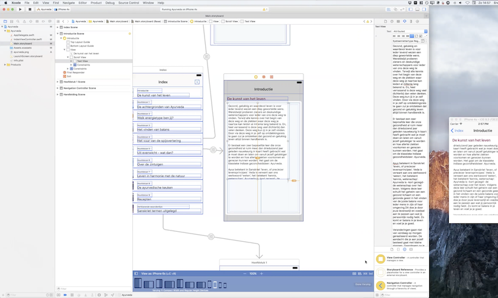

Apps ontwikkelen met Swift wordt steeds populairder. Maar hoe bak je in de juiste tijd een echte app? De actieve leden van SwiftDev.nl werken hard aan het verhogen van hun kennisniveau en de uitbreiding van hun vaardigheden. "Hoe doe ik ...?"-video's vind je op het internet te kust en te keur. Deze handleidingen zijn dan ook bij velen razend populair. De vraag is of zij altijd precies jouw vragen beantwoorden.
Ieders zoektocht naar antwoorden maakt dat we door de ontelbare bomen het bos niet meer zien. De keerzijde hiervan is dat men de app zelf uit het oog verliest. Apps ontwikkelen is een creatief proces waarin je veel van jezelf en anderen kunt leren. Zij zullen jou bij de les houden, wat een welkome en zeer effectieve ervaring is.

Pak deze unieke mogelijkheid aan om jouw app echt te gaan bouwen en lees wat je nu moet doen!
Wie durft het aanstaande zondag om 14:00 uur aan?
Goedwerkende apps bouwen is lastig en kost tijd. Daarom zijn een aantal actieve leden van SwiftDev.nl al een aantal weken op zondagmiddag (vanaf 14:00 uur) in de weer om in "live coding sessies" elkaar interactief de fijne kneepjes van het vak te leren. Wat voor iedereen enorm leuk en leerzaam is. Omdat iedereen, ongeacht zijn of haar leeftijd, kennis en vaardigheden, van elkaar leert. Je leert kleine (of ogenschijnlijk grote) problemen zelf of samen op te lossen. Je overlegt wat de beste manieren zijn om jouw app sneller, beter, sneller, leuker, uitdagender, mooier, meer speelbaar, toegankelijker te maken. Let op: we spreken gewoon Nederlands!
Een groot aantal deelnemers van deze live-coding sessies houden elkaar door de week onderling op de hoogte van hun vorderingen. Dit doen zij op ons Discord kanaal: https://discord.gg/012jxeCGP6B3GpOOv. Denk en doe mee! En je zult direct ervaren dat je echt vorderingen maakt bij het ontwikkelen van je eigen app(s).
Er is heel veel kennis en ervaring en deze groeit met de week. Door jouw kennis en ervaringen actief met elkaar te delen, worden dit voor alle deelnemers leuke, leerzame, maar vooral ook waardevolle uurtjes UI ontwerpen en code schrijven. Iedereen is van harte welkom. Om erbij te zijn, bezoek je deze zoom-sessie. Eventueel moet je wel eerst het zoom-clientprogramma eerst op je computer downloaden.
Actieve deelname maakt dat iedereen maximaal profiteert van deze investering in jezelf als app en Swift-ontwikkelaar. Gemakkelijker kunnen wij het niet maken, maar leerzamer, effectiever en gezelliger wel degelijk. Tot aanstaande zondag (14:00 uur) om het zelf 'ter plekke' mee te gaan maken.